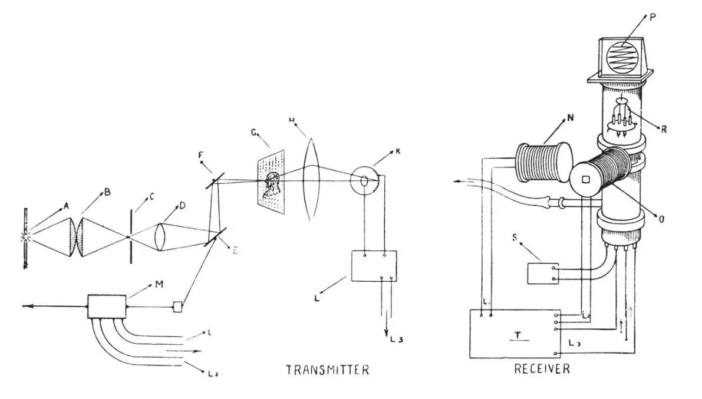
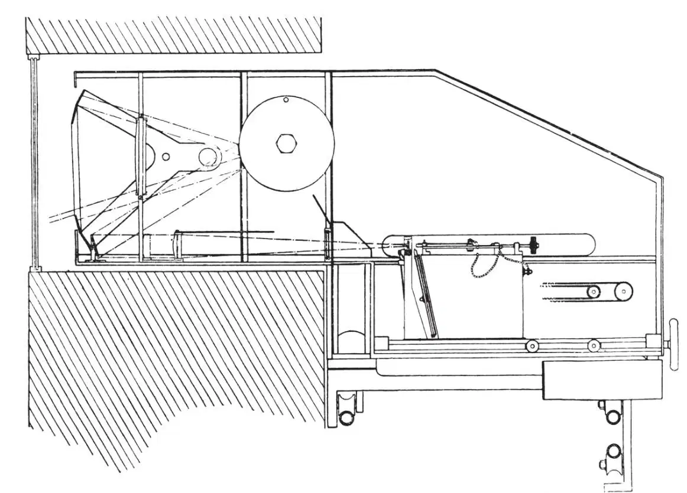
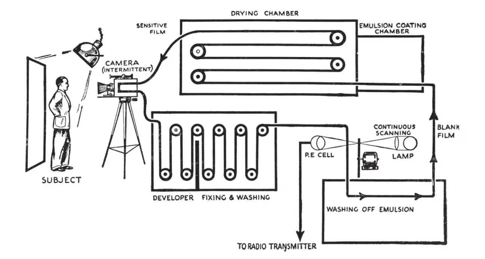

中文
中文A. Church
Editor’s Note
Companies in Europe and America were racing to develop the technology for television. As Archibald Church notes in this review, the scepticism widely expressed in 1926 after John Baird first demonstrated blurred and flickering television images was now being replaced by feverish excitement. In 1932, the Derby horse race had been televised and projected to a live audience in London, and the British Broadcasting Corporation had installed transmission equipment from Baird Television Ltd. Now engineers were developing improved displays based on cathode rays projected on fluorescent screens, and live broadcast was approaching feasibility. A finer screen resolution was needed, however and it was becoming necessary to allocate place in the broadcast spectrum for television signals. 中文
ALL development of the art of television is recent. It is less than ten years since John Baird first obtained televised images of simple stationary objects such as a Maltese cross. He first demonstrated “real” television, the instantaneous reception of optical images of moving subjects, images of which had been transmitted by means of a variable electric current, on January 27, 1926. Most of the scientific workers and publicists present at that demonstration, while impressed by the achievement, were frankly sceptical of television ever achieving any position as a medium of entertainment or of its being put to other commercial uses. The received images were recognisable, but blurred and flickering, and to many scientific workers, a proof of the impossibility of advance in television by a mechanical system of transmission and reception. Other scientific observers, though less antipathetic to the mechanical system, were unconvinced that television broadcasting would ever be practicable owing to the wide range of frequencies which would have to be made available if images with detail comparing with that obtainable on a cinema screen were to be received. This was the more vital criticism of television, as it applied not only to the mechanical means by which Baird obtained his first results but also to any other means, for example, the utilisation of cathode rays, which might afterwards be enlisted in the service of television. 中文
Only minor modifications had been made of the original apparatus used when Baird gave his first demonstration to members of the British Association at Leeds in 1927. In 1926 the subject to be televised was bathed in light from a battery of powerful electric lamps. Between the photoelectric cells and the illuminated subject was a scanning device, a disc in which thirty holes were punched at regular intervals on a spiral and making five revolutions per second. The subject was thus scanned by a rotating optical element strip by strip, each strip being presented in sequence to a light sensitive element, the photoelectric cells. The varying strength of electric current transmitted by the photoelectric cells modified the light in a neon lamp at the receiving end, and this varying single light source was scanned in turn by a “Nipkow” disc synchronised with the disc at the transmitting end. The reconstituted image, two inches square, was seen by looking at the neon lamp through the scanning disc. Synchronism was obtained by the use of synchronous motors. 中文
For the Leeds demonstration “noctovision” was used, the person televised being shielded from the direct glare of the lamps by a sheet of ebonite. In the meantime, however, Baird had made a further notable advance by his invention of the light spot method of scanning. To quote the text of his patent: “The scene or object to be transmitted is traversed by a spot of light, a light sensitive cell being so placed that light reflected back from the spot of light traversing the object falls on the cell.” It is, in effect, an inversion of the flood-lighting method, and possesses the advantage that greatly increased signal strengths are obtained with considerable diminution in the intensity of the illumination to which the subject of transmission is exposed. 中文
Abroad, the method was almost immediately applied by the Bell Telephone Company in the United States in carrying out a television transmission over a circuit between New York and Washington. The same year, 1927, Belin and Holweck achieved a measure of success in transmitting outlines and shadowgraphs using a cathode ray oscillograph (Fig. 1). The success of Baird had given an impetus to research in television in several countries as the patent records of England, the United States, Germany and France will testify. 中文

Fig. 1. Schematic diagram of Belin and Holweck’s television apparatus. 中文
On February 9, 1928, Baird achieved an ambition to be the first to televise across the Atlantic. The signals were picked up in the presence of Reuter’s representative by an amateur operator at Hartsdale, a few miles from New York, the experimental receiver showing an image about three inches square on a ground glass screen. This Baird followed almost immediately by a transmission from London to the s. s. Berengaria in mid-ocean. According to the chief staff engineer of the vessel, the “image varied from time to time in clarity, but movements could be clearly seen, and the image, when clear, was unmistakable”. In these transmissions the wave-length used was 45 metres. The following year, using light spot transmission and cathode glow lamp with disc reconstruction, Baird demonstrated in engineering form at the British Association meeting in Cape Town, and the British Broadcasting Corporation agreed to provide facilities for a series of experimental television broadcasts by the Baird system on the London B.B.C. transmitter. At this time, the transmission of wording for instantaneous news broadcasts, telegram transmission in character, languages and other purposes was further developed by Baird and transmissions of this kind were featured in the experimental broadcasts. 中文
In July 1930, the Baird Company gave its first public demonstration in a theatre, living artists and cinema films being transmitted from its studios in Long Acre, London, W.C.2, and reproduced on a multi-cellular lamp screen on the stage of the London Coliseum. The same year the youthful Baron von Ardenne in Germany commenced his researches on television, utilising the technique acquired in his development of cathode ray oscillograph tubes for the transmission and reception of television images, and within a year earned the distinction of being the first to demonstrate publicly cathode ray reception comparable with that produced by mechanical means. At first, von Ardenne received images transmitted by mechanical means, but later, by using a variable velocity constant intensity cathode stream instead of one of varying intensity and constant velocity, he was able to employ his cathode ray tubes for transmission and reception. 中文
Meanwhile, researches into the possibilities of cathode ray television were engaging the attention of a large number of scientific workers in the laboratories of the Radio Corporation of America and its associated enterprises, independently by the Philco and other American companies, and by the Fernseh A. G. of Berlin, in which the Baird Company are equal partners with Bosch, Zeiss-Ikon, and Loewe. The last-named holds important von Ardenne patent rights. In the Fernseh A. G. laboratories, research in cathode ray television was directed towards the development and utilisation of “hard” tubes, that is, tubes at pressures below 10－5 mm., as contrasted with the “soft” tubes in use by the Loewe Company, the advantage claimed for the hard tube being its long life, an important consideration. 中文
Proponents of mechanical methods, however, were by no means discouraged by the results obtained by the use of cathode ray tubes. The Baird Company, by using a mirror-drum instead of a Nipkow disc at the transmitting end, and at the receiving end using either a directly-modulated arc or a multiple Kerr cell in conjunction with a mirror-drum, was able to project fairly bright images on a screen about 6 ft. × 2 ft. in size, and demonstrated its results at the British Association centenary meeting in London, in the exhibition devoted to Mechanical Aids to Learning. This demonstration followed one in January 1931 in the Baird Laboratories at Long Acre of three-zone television, three 30-line mirror-drums being used to obtain an extended image. Later in the same month the Gramophone Company gave a similar performance in London at the Exhibition of the Physical and Optical Society, at which cinema films were transmitted by the multi-channel process and reproduced by means of a Kerr cell and mirror drum apparatus on a translucent screen. In the same year the Derby was televised by the Baird process. 中文
In 1932 five major events in the progress of television took place. Fernseh A. G., the company organised to develop the Baird processes in Germany, built and installed a complete transmission equipment for the Ente Italiano per le Audizione Radiofoniche in Rome; the Derby was televised and projected at the time of its occurrence upon the screen of a London cinema by the Baird Company; the British Broadcasting Corporation installed television transmission equipment designed by Baird Television Ltd., for regular transmissions from its London studio (Fig. 2); and the Baird Company designed and marketed a much improved home television receiver, the Nipkow disc and neon tube of the old type being replaced by a mirror-drum and Kerr cell combination for projecting the received image on a translucent screen: and Dr. Alexanderson, of the American General Electric Company, successfully transmitted and received television images over a light-beam, with apparatus and by methods similar to those demonstrated by the Marconi Company at Leicester at the recent meeting of the British Association. 中文

Fig. 2. A sectional scale drawing of the television transmitter as installed at Studio B. B., at Broadcasting House, London. 中文
This year has been one of feverish activity on the part of all companies interested in the commercial exploitation of television, and of numerous independent research workers in various countries. Many interesting and ingenious modifications have been made in the cathode ray oscillographs. The Fernseh A. G. has made tubes with fluorescent ends with diameters up to 2 feet. Von Ardenne has devised a method of projecting the cathode ray beam from a plate within the tube on to an external screen. Von Mihaly has developed a mechanical system by which the modulated light of the receiver is swept by a small rotating mirror at the axis of a stationary drum across a number of mirrors fixed on its inside surface, for which he claims superiority over the revolving mirror-drum. The Fernseh A. G. laboratories have constructed beautifully accurate mirror-screws with 90 and 120 reflecting surfaces of stainless steel. Dr. Vladimir Zworykin, the American research engineer, has made sensational claims for what he terms his iconoscope, which has been described as consisting of two devices—a photoelectric mosaic on which a scene is focused by a lens system, and a cathode ray gun which fires at this mosaic screen a stream of electron projectiles. The signal plate on which the scene to be televised is focused may be about 4 in.×5 in. in size and on this surface are millions of small photo-cells, each consisting of a minute silver globule sensitised by caesium. These globules are deposited on an insulating plate, such as a thin sheet of mica, the back of which is made conductive by a metal coating. Within the same glass bulb as the mosaic screen is the electron gun, which throws a beam of electrons at the screen and is made to sweep across the screen horizontally and vertically by deflecting coils as in an ordinary cathode ray tube. Whenever an electron hits a photocell, it neutralises part of the charge on the associated condenser. This discharge current is picked up, amplified and transmitted to the receiving cathode ray beam which is moving across a fluorescent screen in synchronism with the scanning beam. The varying discharge currents modulate this receiving beam and hence the screen at the receiver. It is reported that a similar device has been invented by Dr. Francis Henroteau, chief of the Dominion Observatory, Ottawa, who calls his invention the “super-eye”. If the claims can be backed up by practical demonstrations, a new and important advance will be made in television. 中文
Again and again in the last two years, it has been urged that finer resolution than that obtainable with the 30-line standard, 2.4:1 ratio, picture is necessary before television will become popular. This may or may not be so, but the true nature of the present position should now be realised. In the first place, it is easily demonstrable (and it has in fact already been put forward) that, with a 10 kc./sec. band-width, the intelligence-time transmission characteristic of a channel (at a reasonable picture-speed such as 12.5 per second to minimise flicker) is most economically filled at about this number of lines and ratio. 中文
At the moment, pictures incomparably better than those possible with 30 lines, using mechanical reconstituting devices, are obtainable with cathode ray receiving apparatus which has become available this year. Such pictures were first demonstrated publicly in Great Britain by the Baird Company at this year’s meeting at Leicester of the British Association and by Loewe, Fernseh A. G. and others at the Berlin Radio Exhibition, comprise 120–240 scanning strips, and require side band widths of from 150 kc./sec. to 1,000 kc./sec. for their proper transmission. In view of the Geneva convention, under which absolutely no provision was made for the proper expansion and development of television in the broadcast band of wave-lengths, an entirely new radio technique will have to be developed. Local areas, served by ultra short wave radio transmitters, seem an ideal solution. In practice, however, many difficulties arise, not the least of which is the shielding effect in populous areas of buildings, steel structures, trees, rises in ground contour, etc. Research in this direction is progressing; in fact, experimental short-wave transmissions of high quality pictures (that is, of 120-line definition or more) have already commenced in the London area, the Crystal Palace towers being utilised for this purpose. But it may be a year or two before an established service throughout the country is achieved. In the meantime, further problems arise in connexion with distortion in amplifiers against which the weapons provided by Oliver Heaviside, to whose classic researches on the underlying electrical principles of distortion in communication engineering too little credit is given, are powerless. In extending the band-pass of an amplifier, the “temperature effect” dealt with by L. B. Turner in his inaugural address to the Institution of Electrical Engineers becomes an important factor in determining the interference level of a system; all the more so because an increase in the number of scanning strips in a picture involves the diminution, usually according to some power-function, of light available to affect the light sensitive cells. Further carefully directed research in this direction has become imperative for the transmission of actual scenes, as opposed to film broadcasts. For the projection of television pictures to large audiences in cinema theatres and elsewhere, Fernseh A. G. has recently demonstrated an “intermediate-film” method (Fig. 3). In this the televised image is received on a cinema film which is then developed and passed through an ordinary cinema projector, the time interval between the reception and projection being about 6 seconds if an ordinary reel of film is used, about 20 seconds if an endless loop of film is used, the “base” being first emulsified and dried, then exposed to the receiving scanning device, developed, projected and de-emulsified. This method shows great promise but much further work remains to be done on it. 中文

Fig. 3. Simplified diagram of the apparatus employed by Fernseh A. G. for the transmission of television by the intermediate film method. 中文
(132, 502-505; 1933)
* Paper read before Section A (Mathematical and Physical Sciences) of the British Association at Leicester on September 13.